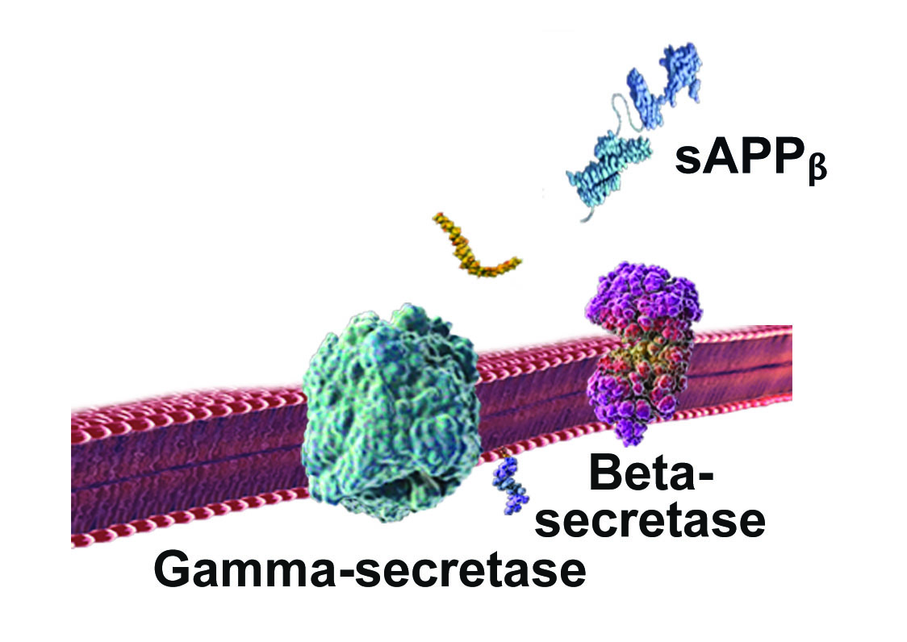

Contents
Introduction
Alzheimer's disease (AD) is a form of dementia, which is a group of symptoms related to a severe decline in mental abilities. There are multiple types of dementia, varying in symptoms, causes, course of disease and prognosis. AD is a progressive neurodegenerative brain disorder, meaning that neurons (brain cells) continually die, and symptoms get worse over time.
What sets Alzheimer's disease apart from other forms of dementia is the presence of plaques and tangles in the brain: the former, an aggregation of proteins known as amyloid beta, and the latter, an accumulation of misfolded tau proteins. Plaques build up outside of the neurons, while tangles build up within neurons. These accumulations damage the neurons and decrease the ability for neurons to communicate, leading to neuronal death and shrinkage of the brain.
A diagnosis of AD requires the presence of plaques and tangles, but this does not mean that AD is a unitary disorder. Alzheimer's disease can be separated into the following categories: familial vs. sporadic and early-onset vs. late onset. These categorizations, however, are not mutually exclusive. See Table 1 below for more information.
Categories of Alzheimer's disease

Table 1: Age of onset: early versus late; Heritability: familial versus sporadic
Because the term familial refers to AD that is present in at least two generations of a family, familial AD can occur with the early or late-onset form of the disease.
Late-onset Alzheimer's disease (LOAD) is the type that people most often refer to when speaking about the illness, whether it be familial or sporadic. LOAD accounts for 97% of all Alzheimer's disease cases and is much less likely to be hereditary than early-onset Alzheimer's disease (EOAD). A particular form of EOAD, early-onset familial Alzheimer's disease (eFAD) is autosomal dominant. This means that if either of a person's parents has the illness, then that person has at least a 50% chance of also having inherited it. Symptoms of eFAD usually appear between 30-64 years of age, although rarely symptoms may begin as early as the twenties.
The tables below show the basic genetics of eFAD. Each person is given two copies of a gene, one from the mother and one from the father.
Understanding the genetics of eFAD
Table 2: One parent will have AD. This parent has a single AD gene, so offspring have a 50% chance of inheriting the disease. (A=Alzheimer's gene; a=no Alzheimer's gene)
Table 3: One parent will have AD. This parent has two AD genes, so offspring have a 100% chance of inheriting the disease. (A=Alzheimer's gene; a=no Alzheimer's gene)
Table 4: Both parents will have AD. One has a single AD gene and the other has two AD genes, so offspring have a 100% chance of inheriting the disease. (A=Alzheimer's gene; a=no Alzheimer's gene)
Table 5: Both parents will have AD. Both have two AD genes, so offspring have a 100% chance of inheriting the disease. (A=Alzheimer's gene; a=no Alzheimer's gene)
Researchers believe that EOAD and LOAD are symptomatically the same disease and indistinguishable by most testing. They progress in the same manner, and the prognosis is the same, but there are three significant differences:
- 1. EOAD has a much higher likelihood of having a genetic cause than LOAD
- 2. Plaques and tangles tend to be more severe in EOAD than LOAD
- 3. EOAD progresses more quickly than LOAD
Thus, classification of AD as genetic vs. sporadic and early-onset vs. late-onset essentially refers to cause and time of onset, respectively.
Show References
Hide References
Stages of Alzheimer's Disease
There are three main stages of Alzheimer's disease: mild, moderate and severe. Signs and symptoms vary from stage to stage and person to person. Not everyone exhibits all of the symptoms and people may progress from stage to stage at different rates.
Mild AD:
- · Difficulty finding words
- · Forgetfulness and memory lapses (e.g. leaving the stove on)
- · Difficulty finding one's way home
- · Difficulty with familiar tasks (e.g. handling money)
- · Mood swings
- · Depression
- · Fearfulness
- · Paranoia
- · Brusqueness
- · Insensitivity
Moderate AD:
- · Trouble performing daily activities (e.g. dressing)
- · Confusion about location and time
- · Decreased awareness of recent experiences and surroundings
- · Difficulty recalling personal information (e.g. address and phone number)
- · Difficulty with toilet procedures (e.g. flushing and hand washing).
- · Motor dysfunction (e.g. difficulty walking)
- · Repetitive motions (e.g. hand wringing)
Severe AD:
Cognitive changes may include:
- · Inability to respond to surroundings
- · Inability to carry on a conversation
Motor dysfuntions may include:
- · The loss of the ability to smile
- · The inability to sit without support
- · The inability to hold one's head up
- · Abnormal reflexes
- · Rigidity of muscles
- · Impaired swallowing
Show References
Hide References
Diagnosis
The diagnosis of Alzheimer's disease is based on the presence of Alzheimer's symptoms as well as the ruling out of other causes of these symptoms. While the use of cognitive tests is important to assess mental decline, the most important thing to determine is one's personal reduction in cognitive ability. In order to determine this, the clinician will often have the person take a test and then retake the test at a later date to assess if there is a decline in performance. Some people, however, may not show any decline, because their high intelligence helps them compensate for cognitive disruptions. Therefore, it is important to interview people who know the patient well, such as a spouse, in order to ascertain the cognitive difficulties that the patient might be experiencing. Recent research also shows that an individual's own assessment of decline is often the most accurate.
Once it is established that there is a decline in cognitive function, the physician must rule out other forms of dementia. As dementia refers to a cognitive decline, many forms of dementia lead to the same early symptoms. The physician must also rule out illnesses such as cryptococcal meningitis, hemochromatosis, and syphilis, because they can also all involve symptoms of dementia. Ruling out these disorders is usually done by testing blood or cerebrospinal fluid.
Other diseases that may be confused with Alzheimer's disease
Alzheimer's disease in its early stage can be confused with other brain illnesses due to similarities and overlap of cognitive symptoms.
Dementia with Lewy Bodies
Dementia with Lewy bodies, characterized by abnormal clumps of a protein known as alpha-synuclein, causes memory loss, but does not follow the same progression as AD. Instead, it is linked more closely with Parkinson's disease, causing sufferers to deal with balance issues as well as mental decline.
Mild Cognitive Impairment
People diagnosed with mild cognitive impairment, although not officially meeting the guidelines for dementia since symptoms are not severe enough, also suffer from memory loss.
Chronic Traumatic Encephalopathy (CTE)
CTE is a degenerative disorder linked to repetitive head trauma. Similarly to AD, CTE sufferers experience memory loss and other dementia-related symptoms. Also similar to AD, the brains of CTE sufferers are atrophied, and their neurons contain tangles. One big difference is that AD brains also contain plaques, and CTE brains generally do not.
Problems Diagnosing Alzheimer's Disease
There are numerous problems involved in making a diagnosis of Alzheimer's disease. These include the need for a postmortem diagnosis in order for a definitive diagnosis, an absence of readily available biomarkers and difficulty diagnosing early-onset AD.
Postmortem Diagnosis
A definitive diagnosis of AD can only be made postmortem so that the brain can be examined for the presence of plaques and tangles. Plaques and tangles are microscopic, so they cannot be seen via standard neuroimaging techniques such as magnetic resonance imaging (MRI).
Absence of Readily-Available Biomarkers
In order to diagnose living individuals with nearly as much certainty as a postmortem diagnosis, biomarkers must be used.
There is a great deal of research focused on the identification of biomarkers for AD. There are some promising advances, but as yet there are no biomarkers that are both readily available and do not require invasive testing. Current methods of assessing biomarkers for Alzheimer's disease prior to death, such as Positron Emission Tomography (PET) and lumbar punctures, do not fit these requirements.
Positron Emission Tomography (PET)
PET scans provide a functional and metabolic assessment of the brain by using a radioactive substance known as a tracer.
By employing a tracer known as Pittsburgh compound B (PiB), researchers are able to label amyloid plaques rather than glucose within the brain and therefore image the extent of the plaques. While this technique is helpful in determining who might have AD, it is not readily available outside of a research setting, because it involves the use of specialized equipment as well as exposing the patient to radioactivity.
Lumbar Puncture
While the total presence of tau protein and the amount of amyloid-beta in cerebrospinal fluid are sensitive biomarkers, the lumbar punctures used to retrieve the fluid are more invasive than researchers and doctors find reasonable. Risks of this highly painful procedure are brain herniation, headache, bleeding at puncture site, and infection, which can cause neurological damage. Lumbar puncture provides more than 85% accuracy in diagnosing Alzheimer's disease.
Difficulty Diagnosing Early-Onset Alzheimer's Disease
Getting a proper diagnosis of early-onset AD is often difficult. Some doctors are unaware of the possibility of AD in mid-life or younger patients. People with early-onset AD are often misdiagnosed as having bipolar disorder, depression, or anxiety disorders because symptoms of mild AD such as mood swings, depression, fearfulness and paranoia overlap with symptoms of mental disorders that are more common than AD in this age group.
Show References
Hide References
Risk Factors
There is no known single cause of Alzheimer's disease, but there are risk factors, in particular, age, genetics and family history.
Age
Individuals 65 years and older are at greatest risk of Alzheimer's disease. The likelihood of developing the disease doubles every five years, reaching 50% after the age of 85 years.
Genetics
See Genetics of Alzheimer's disease
Family history
Those with a parent, sibling or child with Alzheimer's disease are at a higher risk of getting the illness. This may be due solely to non-genetic factors, genetics, or a combination of both. Scientists believe that the causes of Alzheimer's disease are on a spectrum: from entirely genetic to entirely environmental. The earlier the age of onset, the more likely it is to be caused by genetics. The later the onset of AD, the more likely that an accumulation of age-related malfunctions and environmental factors, rather than genetics, has led to the illness.
Other factors that may increase risk for AD are:
- 1. Education level: Lower levels of formal education increase the risk for AD.
- 2. Race and ethnicity: Blacks and Hispanics are twice as likely as whites of the same age to develop AD.
- 3. Cardiovascular illness: Research has shown that high blood pressure and high cholesterol are associated with increased risk for AD.
- 4. Diabetes: Studies indicate that people with type 2 diabetes have a lower level of cognitive function and are at increased risk for developing AD compared to people without diabetes. A recent study demonstrated that people with type 2 diabetes show increased brain dysfunction, most likely resulting from high levels of insulin resistance in the brain and decreased ability for glucose to fuel normal brain function.
- 5. Head trauma: Moderate to severe traumatic brain injury increases the risk of developing AD. One study has shown that seniors with a history of traumatic brain injury are at 2.3 times greater risk of AD than their normal counterparts.
- 6. Dietary factors: Some studies have shown that people who eat a diet high in fat and sugar are at greater risk of developing AD compared to those who eat mostly lean proteins and fruits and vegetables.
Show References
Hide References
Genetics
Early-Onset Familial Alzheimer's disease
A particular form of early-onset Alzheimer's disease (EOAD), early-onset familial Alzheimer's disease (eFAD) is autosomal dominant. This means that if either of a person's parents has the illness, then that person has at least a 50% chance of also having inherited it.
There are three known genes that cause eFAD:
Amyloid Precursor Protein (APP) located on chromosome 21
The APP gene encodes the production of amyloid precursor protein, which is an integral component in the creation of amyloid plaques. Because APP is located on chromosome 21, people with trisomy 21 (Down Syndrome) usually get AD by age 40. More than 50 mutations on the APP gene have been linked to Alzheimer's disease. Mutations in this gene account for 10% of eFAD cases.
Presenilin-1 (PS1) located on chromosome 14
The protein, presenilin-1, for which the PS1 gene encodes, is a subunit of the gamma-secretase complex. It carries out the major function of the complex, which is to cleave other proteins, in particular, APP. Of the three genes associated with eFAD, a PS1 mutation is the most common cause of eFAD, accounting for 70% of cases. More than 150 gene mutations on PS1 have been linked to Alzheimer's disease.
Presenilin-2 (PS2) located on chromosome 1
The PS2 gene encodes for a protein called presenilin-2, which helps to process proteins (including APP) that carry signals from the cell membrane to the cell nucleus. These signals in turn activate genes important for cell maturation. There are at least 11 gene mutations on PS2 that have been linked to eFAD and they account for 5% of all cases.
While a pathogenic mutation in one of these genes almost guarantees that a person will develop eFAD, there are many cases of the disorder that cannot be linked to any of these genes. In these situations, mutations on several genes may cause the illness.
Late-onset Alzheimer's disease
Late-onset Alzheimer's disease (LOAD) accounts for 97% of all Alzheimer's disease cases. LOAD is much less likely than EOAD to be hereditary, although one allele of the apolipoprotein E gene does increase the likelihood that a person will get this form of Alzheimer's disease.
Apolipoprotein E
There are 3 apolipoprotein E (ApoE) gene alleles, one of which, ApoE4, is a major risk factor for AD. The ApoE4 allele is found in approximately 10-15% of the population. Unlike pathogenic mutations of APP, PS1 and PS2, the ApoE4 allele does not guarantee that a person will develop AD. Rather, this allele increases the likelihood that a person will develop the illness. Carriers of a single ApoE4 allele, versus carriers of the ApoE2 and ApoE3 alleles, are 3 times more likely to get AD. With two such alleles, the risk increases to 6-7 times the likelihood of developing AD.
Inheriting this allele also lowers the age of onset of AD by about ten years, compared to when the person might have otherwise developed it. In families with familial AD with mutations for APP or PS2 (but not PS1), those who acquire the ApoE4 allele and the pathogenic mutation get AD at a younger age than do family members with autosomal dominant mutations but with the ApoE2 or ApoE3 alleles.
The reason for the increased risk of the ApoE4 allele is not entirely known; however, the ApoE gene is involved in the movement of cholesterol around the body, and the ApoE4 allele is less efficient than ApoE2 and ApoE3 at performing this task. It is also not known why cholesterol is important in the development of AD, but recent research links unhealthy cholesterol levels to higher levels of amyloid-beta.
Show References
Hide References
Neurobiology
Alzheimer's disease leads to a loss of neuronal connections and cell death, resulting in a withering of brain matter. This destruction of brain tissue leads to the personality and cognitive changes often manifested in people with the disease. What distinguishes Alzheimer's disease from other types of dementia is the presence of amyloid plaques and neurofibrillary tangles.
What are amyloid plaques?
Amyloid plaques are aggregations of a protein known as amyloid beta. These plaques build up outside of neurons, possibly reacting with receptors on neighboring cells, leading to the disruption of cell communication and function.
Research has shown that neurons surrounding plaques are hyperactive. Hyperactivity in neurons causes decreased sensitivity of these neurons, leading to decreased functionality. This decreased functionality is akin to the behavior of overworked muscles, although muscle fatigue is temporary.
Figure 1: In Alzheimer's disease, plaques cause surrounding neurons to be overactive. Dorostkar, M.M., & Herms, J. (2012).
How are amyloid plaques formed?
The formation of plaques begins when a protein known as amyloid precursor protein (APP) is cleaved abnormally.
After APP is made within the cell, it gets embedded into the cell membrane, where it sticks out into extracellular space. Normally, an enzyme called alpha-secretase cleaves APP, creating a large fragment that works to promote neuronal growth. After the creation of this large fragment, the enzyme gamma-secretase cleaves the remaining small fragment of APP still connected to the cell membrane, which subsequently floats harmlessly into extracellular space.
Normal APP Processing Pathway
Figure 2. In the normal APP processing pathway, the enzyme, alpha-secretase is available to cleave APP.

Figure 3. In the normal APP processing pathway, alpha-secretase cleaves APP.
In Alzheimer's disease, however, an enzyme known as beta-secretase, rather than alpha-secretase, cleaves APP. One hypothesis as to why beta-secretase rather than alpha-secretase cleaves the APP is that when the brain is glucose-deprived, as might be caused from insulin resistance or cardiovascular disease restricting blood flow, neurons increase beta-secretase production as a protective response. Unfortunately, beta-secretase cleaves APP at an alternate location. The remaining APP is cleaved by gamma-secretase, resulting in a soluble fragment. These soluble fragments cling to one another to form amyloid plaques, which are insoluble.
APP Processing Pathway in Alzheimer's Disease
Figure 4. With the APP processing pathway in Alzheimer's disease, the beta-secretase enzyme, rather than alpha-secretase, is available to cleave APP.
Figure 5: With the APP processing pathway in Alzheimer's disease, the beta-secretase enzyme cleaves APP.
What are neurofibrillary tangles?
Neurofibrillary tangles, or tangles, are accumulations of misfolded tau protein within neurons. The formation of tangles within the neuron leads to the disintegration of the cell's transport network, disabling interneuron communication.
How are neurofibrillary tangles formed?
Tangles form when tau acquires more phosphate molecules than needed, making the tau hyperphosphorylated.
Usually, tau binds to microtubules, structures within the neuron that aid in the transport of nutrients and cell components from the cell body down to the axon, in order to help stabilize them. In Alzheimer's disease, the hyperphosphorylated tau proteins no longer stick to microtubules, ultimately leading to the disintegration of these transport structures. Rather, abnormal tau proteins bind to other hyperphosphorylated tau, forming structures known as paired helical filaments. These filaments bind to each other to form tangles.
Figure 2: Formation of tangles. Rodgers, Anne (2011)
Role of Neurotransmitters
Neurotransmitters are brain chemicals that transmit signals from one neuron to another. Two neurotransmitters in particular, acetylcholine and glutamate, are known to play a role in the progression of Alzheimer's disease.
· Acetylcholine
Acetylcholine is essential for learning and memory. Alzheimer's disease is associated with decreased acetylcholine production and the death of acetylcholine neurons, ravaging the brain along acetylcholine pathways.
· Glutamate
Glutamate is also important for learning and memory. In Alzheimer's disease, glutamate levels are high, most likely due to a release of excess glutamate from damaged cells, which in turn speeds cell damage.
Changes in the AD brain
Plaques and tangles are present in the brain even before patients start showing symptoms. This is known as the pre-clinical stage. During this time, plaques are located almost exclusively in the neocortex. The neocortex is the most recently evolved part of the brain, and it is involved in higher-order functions such as sensory perception, movement, language, conscious thought, and spatial reasoning. In the preclinical stage, while lightly diffused in the neocortex, plaques progress to the medial temporal lobe, and in particular the hippocampus (a region important for memory). Plaques are also located in the motor cortex, striatum and basal ganglia, which are all involved in movement.
During clinical stages of AD, plaques and tangles greatly increase in number, spreading further throughout the brain. The hippocampus loses approximately 20 percent of its cells by mild stage AD and during episodic memory tasks, the hippocampus shows decreased activation. This is consistent with the memory loss that patients experience during AD.
As the disease progresses, plaques and tangles continue to increase in number, leading to greater neuronal loss and dysfunction. All areas of the brain are affected, but it is not until the final stage of AD that the brainstem (integral for respiratory and cardiac functions, consciousness and pain perception, for example) and the cerebellum (important for motor control) are taken over by plaques. Over the course of the illness, the brain shrinks dramatically.
Show References
Hide References
Treatment & Prevention
There is no cure for Alzheimer's disease, but there are treatments that can slow the progression of the illness. There are currently five drugs approved to treat Alzheimer's disease, each falling into one of two categories: cholinesterase inhibitors and NMDA receptor antagonists.
A cholinesterase inhibitor is a chemical that increases the amount of a neurotransmitter known as acetylcholine in the brain by decreasing how much acetylcholine is broken down. Acetylcholine is important for learning and memory, and the more of this brain chemical that is available, the greater the likelihood that a neuron that uses acetylcholine will properly transport the necessary signal. People with Alzheimer's disease tend to make less acetylcholine over time, so drugs that inhibit the break down of acetylcholine improve memory symptoms. Because these drugs do not make acetylcholine, they may stop working as the disease progresses.
Cholinesterase inhibitors such as Aricept, Razadyne, Exelon, and Cognex produce small improvements in memory and general function. Common side effects include nausea, vomiting, diarrhea, indigestion, headache, joint pain and drowsiness. Aricept and Exelon are approved for all stages of Alzheimer's disease, while Razadyne, and Cognex are approved for mild to moderate Alzheimer's.
NMDA receptor antagonists work by regulating the activity of glutamate, another neurotransmitter important for learning and memory. In Alzheimer's disease, excess glutamate can be released from damaged cells, which in turn speeds cell damage. NMDA receptor antagonists can help prevent further damage by blocking NMDA receptors so that glutamate cannot activate them.
The NMDA receptor antagonist, Namenda, slows cognitive decline including decline in memory and language. Common side effects of Namenda are dizziness, headache, gastrointestinal dysfunction, body aches, fatigue, coughing and hypertension. Namenda is approved for moderate to severe Alzheimer's disease.
Current Research in Drug Treatment
Researchers have identified several classes of drugs that have shown promise in AD treatment, including secretase inhibitors, which inhibit the production of amyloid beta, immunotherapies, which increase the clearance of amyloid beta, and inhibitory drugs, which inhibit amyloid beta aggregation.
Although these drugs do decrease the amount of plaques in the brain, they have not been shown to improve cognition. Two possible reasons for this lack of effectiveness are that drug testing might be conducted on subjects whose disease is too advanced, and that the cognitively impaired subjects in clinical studies may not represent a homogeneous group of Alzheimer's disease patients, meaning that not all of the subjects in the study have dementia due to AD.
Prevention
Without a known cause for Alzheimer's disease, there is no guaranteed way to prevent it. Researchers are currently looking into ways to decrease the likelihood of getting AD, but studies have not yet shown that lifestyle factors can prevent or slow the illness. Some key areas of AD prevention research are head trauma, heart health, nutrition, exercise, social connections, intellectual activity and mindfulness meditation. One possible way, however, may be to modulate the activity of the Default Mode Network as explained in the next section.